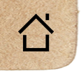

<!DOCTYPE html>
<html>
<head>
	<title>Two Cacodylic Eyes</title>

<script src="dada.js"></script>
<link rel="stylesheet" href="dada.css">
<link rel="shortcut icon" type="image/x-icon" href="favicon.ico" />
	

</head>

<body class="wooden">

<!-- 
<a href="newhome.html">
  
</a>
-->	
<!-- The original, unedited image -->


<!-- The "edited" image base -->


<!-- The little piece that is changed & clickable to solve the puzzle -->
<a style="cursor:default" target="_blank" href="selavy.html">
	
</a>

</body>

</html>

